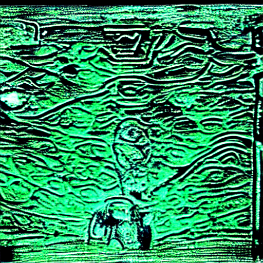
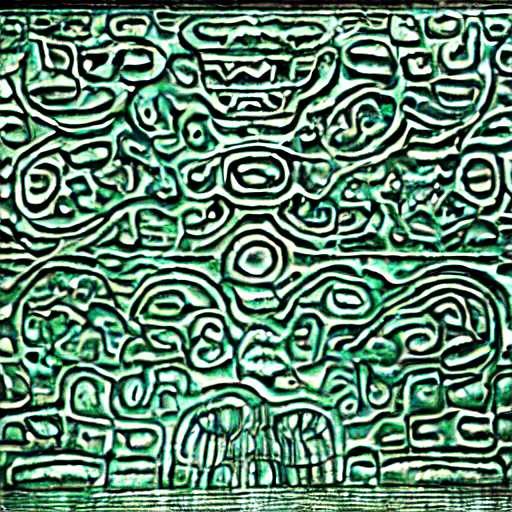
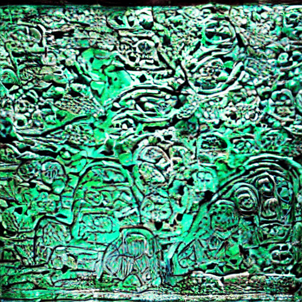
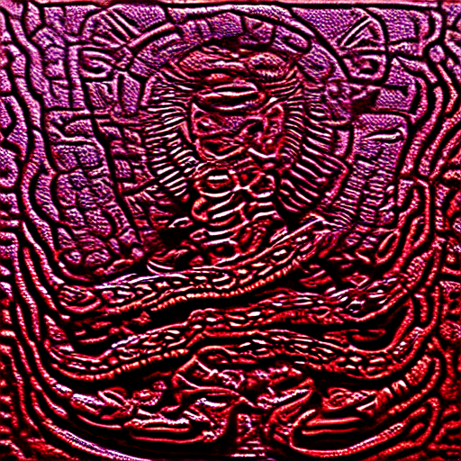
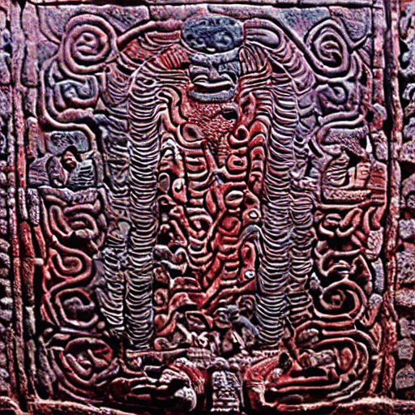
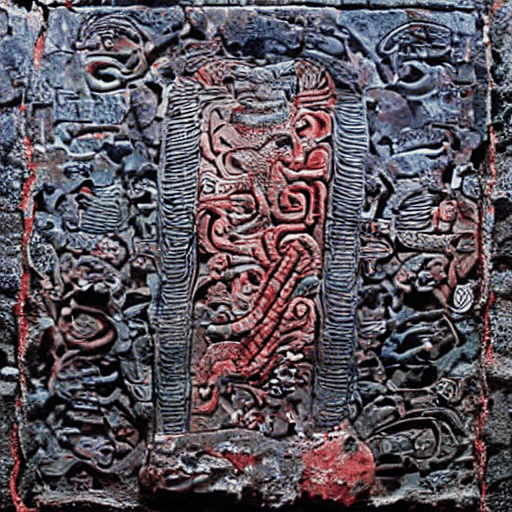
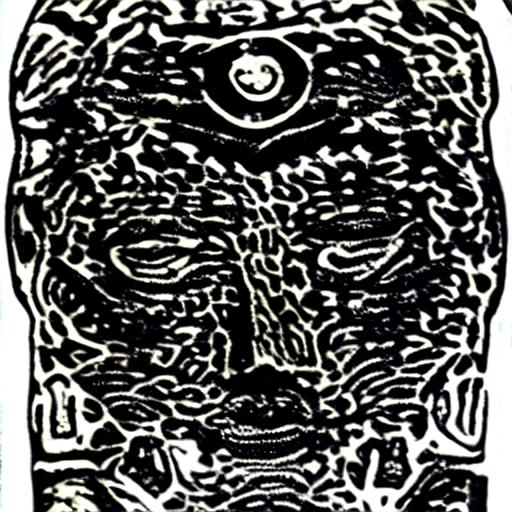
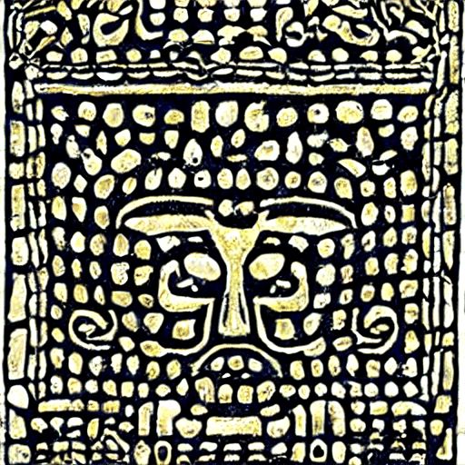
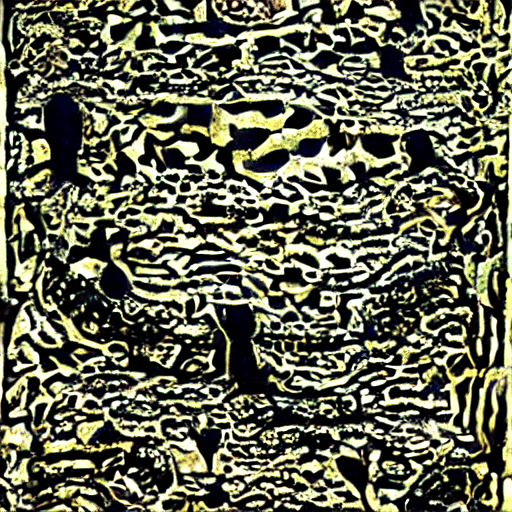
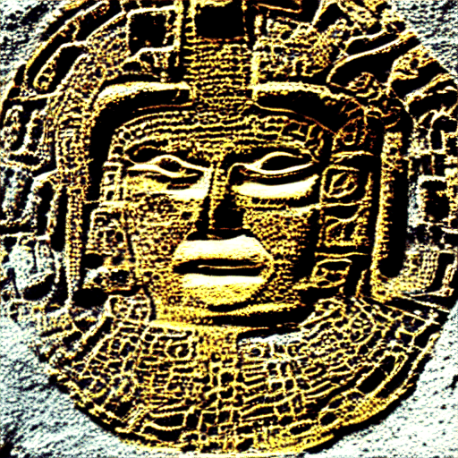

Each of the 20 day signs of the 260-day Maya sacred calendar, animated as living stone — carved, lit, and atmospheric — across four quality tiers on a Tenstorrent Blackhole QB2 board. Four chips run in parallel, one glyph per chip. Scroll down for the Phase 3 MotionAdapter comparison.
Phase 2.5 cross-frame blend + Phase 3 MotionAdapter · SD 1.4 base · 512 × 512 · tt-animatediff
4-chip Tenstorrent Blackhole QB2 board. Four glyphs run in parallel —
one per chip — via separate generate.py processes each
pinned to a chip with --device-id 0–3.
PNDM scheduler, 25 denoising steps, 8 frames at 512×512.
Cross-frame temporal attention at --temporal-alpha 0.35
blends noise predictions across all 8 frames at each step for
structural cohesion between frames.
EulerDiscrete (Lightning) scheduler, 8 denoising steps, 8 frames at 512×512. Same temporal alpha as Q1. ~3× faster than Q1 per glyph. Useful for quick composition checks.
Full AnimateDiff AnimateDiffTransformer3D at all 7 UNet injection points per step.
Strongest temporal coherence — ~52 s/frame. See the Phase 3 comparison section below.
Phase 3 with the two costliest decoder injection points skipped. Only 5 of 7 points active — ~7.7 s/frame, faster than Phase 2.5. Trade: slightly softer decoder-side temporal detail.
Run python scripts/generate_mayan_glyphs.py --tier Q1 (or Q2/Q3/Q4).
Use --sample for the 4-glyph comparison subset, or
--glyph imix for a single glyph.
Phase 3 runs AnimateDiffTransformer3D at 7 UNet injection points per denoising step —
the full AnimateDiff temporal transformer on CPU, producing the strongest inter-frame motion structure.
Skipping the two costliest decoder injection points (up1 32×32 and up2 64×64) drops wall-clock
from ~52 s/frame to ~7.7 s/frame, faster than Phase 2.5. The tradeoff is visible in the decoder:
skip mode produces slightly softer motion coherence in the lower-spatial-frequency detail.
Same prompt, same seed, same 25 PNDM steps — only the injection-point set changes.



Generating…


Generating…


Generating…
python scripts/generate_mayan_glyphs.py --tier Q3 --sample (full, ~26 min for 4 glyphs) ·
python scripts/generate_mayan_glyphs.py --tier Q4 --sample (skip, ~5 min for 4 glyphs).
The --sample flag runs just these 4 glyphs (imix, chikchan, ix, ajaw).
See benchmarks for timing breakdown.